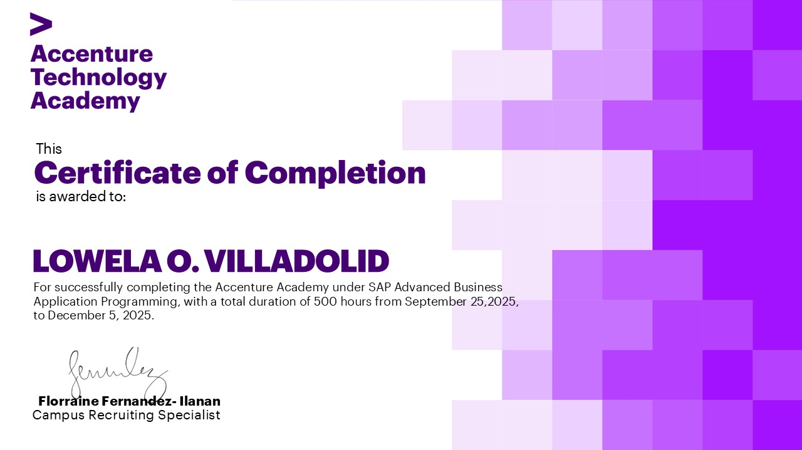
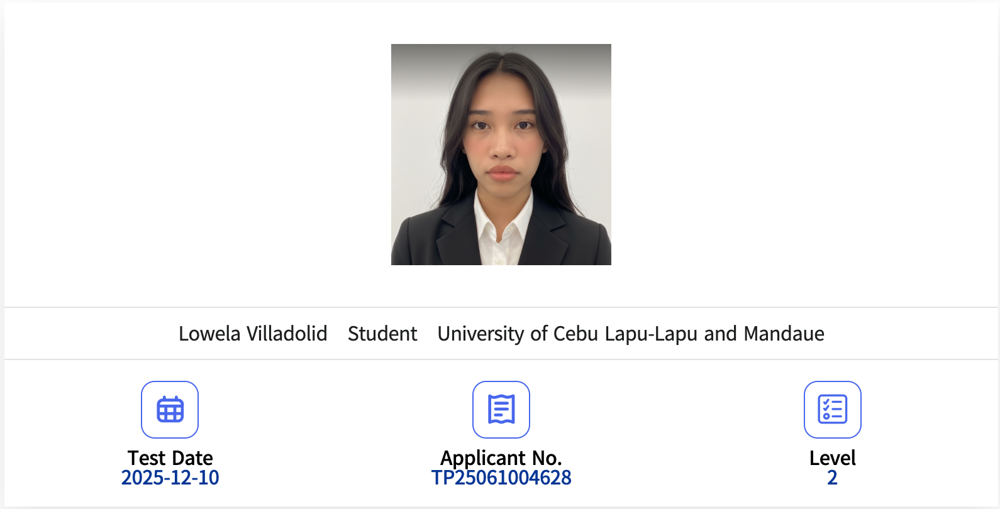
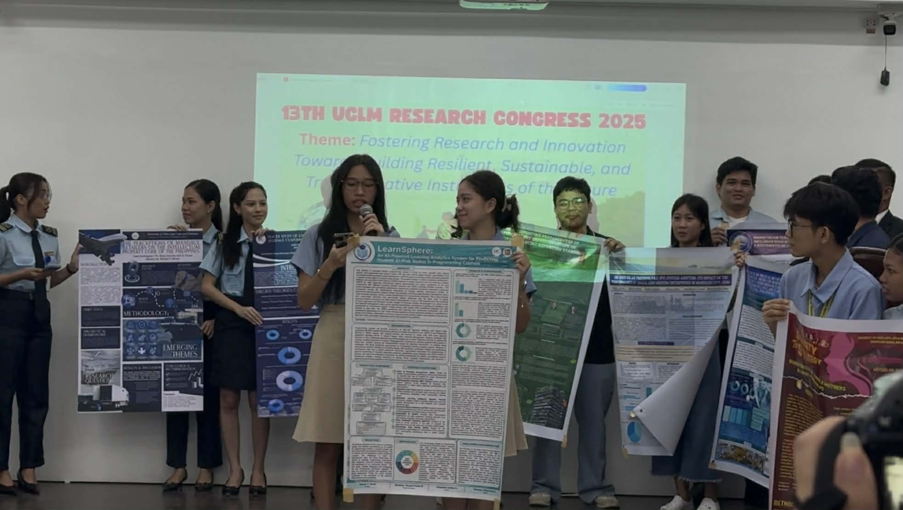
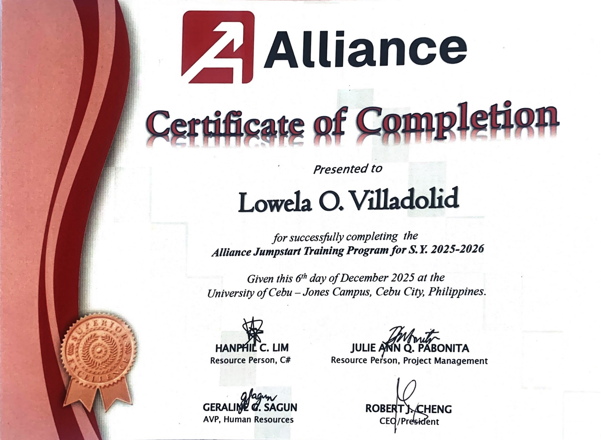
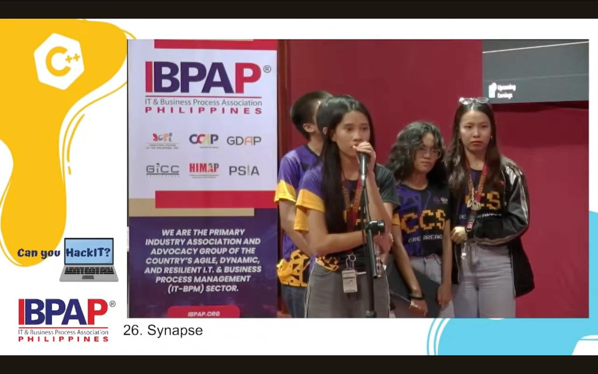
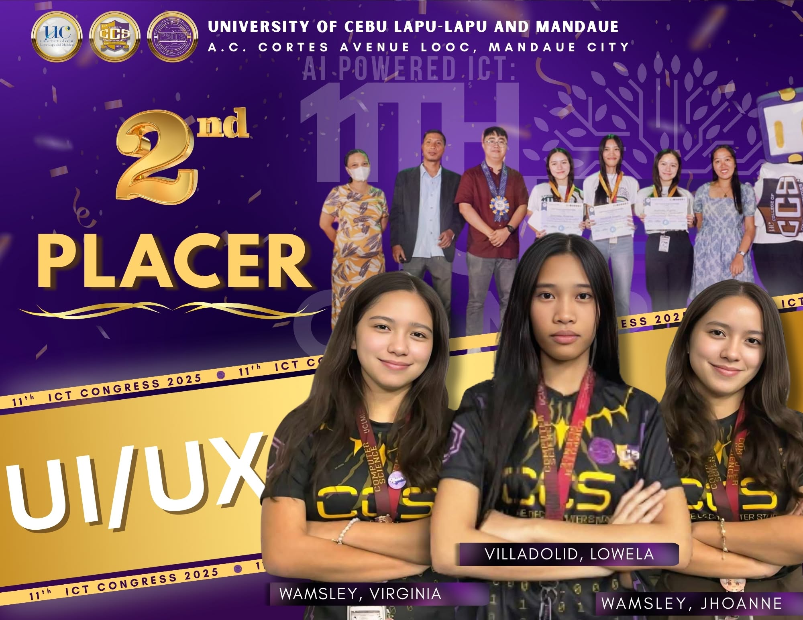
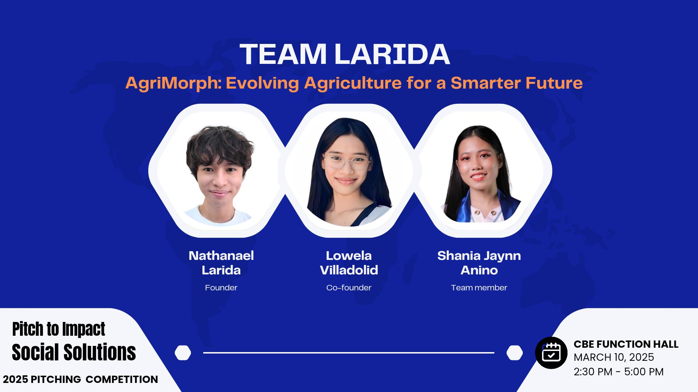
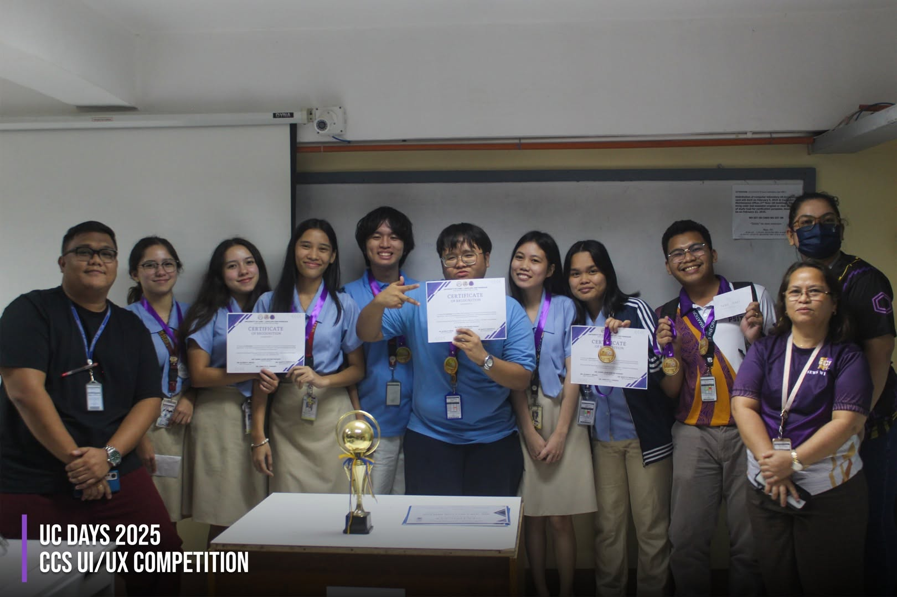
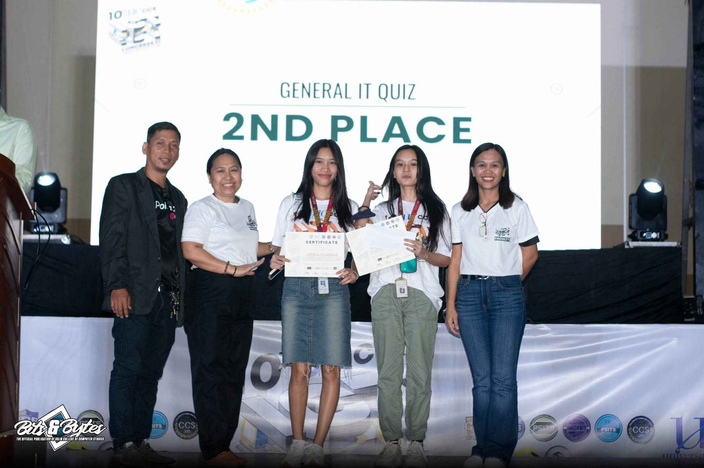
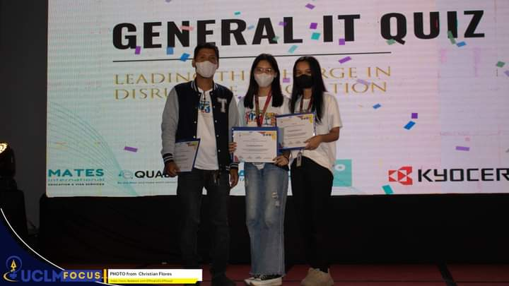

Competitions & Certifications

Sept 2025 - Dec 2025
SAP ABAP Certification — Accenture Academy
Earned upon completing the intensive SAP ABAP Bootcamp. Validates proficiency in ABAP development, ALV reporting, BADIs, function modules, and enterprise-grade SAP ERP programming.
✅ Program Completer

Dec 2025
13th TOPCIT Philippines — Test of Practical Competency in ICT
Globally recognized standardized ICT assessment. Achieving Level 2 demonstrates solid, industry-relevant competency in software development fundamentals and ICT knowledge.
🏅 Level 2 Passer

Dec 2025
13th UCLM Research Congress Poster Competition
Placed 2nd in the poster competition at UCLM's 13th Research Congress, presenting research findings to a panel of academic evaluators in a competitive multi-discipline showcase.
🥈 2nd Place

Aug 2025 - Nov 2025
Alliance Software Inc. Jumpstart Training Program
Successfully completed Alliance Software Inc.'s competitive Jumpstart Training Program, serving as Technical Manager for the cohort's capstone full-stack project.
✅ Program Completer

Jul 2025
IBPAP Can You HackIT? Challenge
Participated in the IT & Business Process Association of the Philippines hackathon, developing an innovative solution for a real industry challenge under time pressure.
💻 Hackathon Participant

Apr 2025
11th ICT Congress UI/UX Competition
Placed 2nd in the UI/UX design intercampus competition at the 11th ICT Congress 2025, competing in interface design, prototyping, and UX rationale presentation.
🥈 2nd Place

Mar 2025
WorldMUN Resolution Project: Social Venture Challenge 2025
Reached the semi-finals presenting a technology-driven social enterprise concept.
🏅 Semi-Finalist

Mar 2025
UC College Days 2025 UI/UX Competition
Placed 2nd in the UI/UX design competition during UC College Days 2025, demonstrating strong visual design thinking, wireframing, and user-centered design principles.
🥈 2nd Place

Apr 2024
10th ICT Congress 2024 General IT Quiz Competition
Placed 3rd in the General IT Quiz Competition at the 10th ICT Congress 2024, competing across various CS-related topics and technology domains.
🥉 3rd Place

May 2023
9th ICT Congress 2023 General IT Quiz Bowl
Placed 3rd in the inaugural General IT Quiz Bowl at UC's ICT Congress 2023 — one of the first competitive events as a CS student.
🥉 3rd Place
Academic Honors
2022–2026
Magna Cum Laude — Ranked 3rd Among All Graduates, Class of 2026
Graduated Magna Cum Laude from UCLM's BSCS program (June 2026) with a GPA of 1.21, ranking 3rd among all graduates in the Class of 2026.
🎓 Latin Honor · GPA 1.21 · Top 3
2022–2026
Consistent Dean's Lister
Consistently made the Dean's List throughout the entire BSCS program from 2022 to 2026, recognizing top academic performance every semester without exception.
2022–2026
Consistent UCLM Academic Scholar
Awarded and maintained the Academic Scholarship at UCLM throughout the entire 4-year BSCS program.
Leadership & Contributions
2022–2026
Associate Editor & Managing Editor — Bits & Bytes, CCS Publication
Served as both Associate Editor and Managing Editor for Bits & Bytes, the official CCS publication at UCLM, overseeing editorial direction, content planning, and publication quality across multiple issues.
2025
Technical Manager — Alliance Software Inc. Jumpstart Program
Selected as Technical Manager among the trainee cohort at Alliance Software Inc., managing architecture decisions, Git workflow, sprint coordination, and final project delivery.